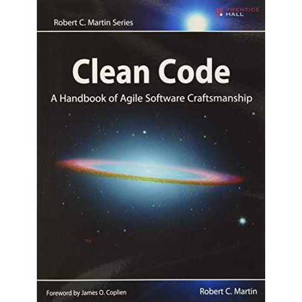

## Building professional relationships </br> #### Key topics for tonight <div style="text-align: left; font-size: 1.75rem"> - Networking vs. technical knowledge </br> - How to be a good mentee </br> - Software engineering books </br> </div> --- ## Agenda for tonight <div style="text-align: left; font-size: 1.75rem"> - Lecture 6 - 6:30 - Studio / Technical interview time 6:30 - 9 - Join the `#careermodules` channel in slack. - You'll be notified via that channel and asked to join a separate zoom room for 15 minutes to complete your interview with one of our volunteers. </div> --- ## Networking vs. Technical Knowledge <div style="text-align: left; font-size: 1.75rem"> - As you continue to grow in your career, it's important to acknowledge the need to develop not only your technical skills, but also your professional network. - While being an excellent developer will give you a high rate of success in your interviews, having a strong network will help you become aware of job opportunities as they arrive (and might also get your resume on the top of the pile when the company selects people to interview). </div> --- ## Networking (cont) <div style="text-align: left; font-size: 1.75rem"> - Networking can happen in a vast number of places: - Local professional groups. - Through the open source community. - Shared learning groups (such as launch code!) - Online discussion boards / forums / discords / etc. </div> --- ## Networking groups - [Philly.NET](https://www.meetup.com/Philly-NET/) - [Reactadelphia](https://twitter.com/reactadelphia) - [PhillyJUG](https://www.meetup.com/PhillyJUG/) (Java Users' Group) --- ## How to be a good Mentee <div style="text-align: left; font-size: 1.75rem"> - It's human nature to want to lift those up around us, and as such, we shouldn't be afraid to accept help from others who offer to help us grow in this new career. - There are important things to keep in mind when accepting this help that will lead to a more fulfilling relationship for both the mentor and mentee. </div> --- ## How to be a good Mentee (cont) #### Tips <div style="text-align: left; font-size: 1.75rem"> - Be an active listener. - Ask direct questions, take notes, and try to avoid asking the same questions repeatedly. - Spend a reasonable amount of time attempting to solve the problem yourself. Invoke the "30 minute rule". - You don't want the mentor feeling like they are doing all the problem solving for you. Learning to solve your own problems is perhaps one of the most important skills a developer pocessess. - After you haven't been able to discover the solution yourself, provide the context of <span style="color: cadetblue">what you tried</span> to your mentor so that they understand the steps you took to try to solve the problem. </div> --- ## How to be a good Mentee (cont) #### More tips <div style="text-align: left; font-size: 1.75rem"> - After determining a solution, repeat your "take aways" back to the mentor. - This allows for them to correct any misunderstandings, explore any nuisance, as well as drive home a lesson that can be learned from the interaction. - It's up to you to organize their teachings and integrate their suggestions into your work. If you know they have already answered something via slack, opt to search through the chat history instead of asking them to type it out again. </div> --- ## Software Engineering books <div style="text-align: left; font-size: 1.75rem"> Within the world of Software Engineering, there are some books that have been so widely read that awareness of their existence can serve as a form of vetting and common ground for professionals in the industry (not to mention are extremely informative in their own right!). </div> --- ## Software Engineering books #### Design Patterns (Gang of Four) <img src="images/05-professional-relationships/gang-of-four.jpg" style="width: 20%; background: white;"> <div style="text-align: left; font-size: 1.75rem"> A guidebook to tried and true software design patterns for providing eloquent solutions to common software engineering needs. The book includes both a catalog of industry standard design patterns, as well exploring the appropriate times to use different solutions through case studies. </div> --- ## Software Engineering books (cont) #### Clean Code  <div style="text-align: left; font-size: 1.75rem"> This book covers 3 large topics 1) Principles, patterns, and practices of writing clean code. 2) Exploring several case studies of increasing complexity. 3) Identifying "code smells" of common mistakes that developers will make. </div> --- ## Software Engineering books (cont) #### The Mythical Man-Month <div style="text-align: left; font-size: 1.75rem"> Essays and analysis of the successes and failures of large scale software engineering projects. The case studies covered in this book have given the industry common terms and cautionary tales to identify poor software engineering management decisions. </div> --- ## Software Engineering books (cont) #### CODE <div style="text-align: left; font-size: 1.75rem"> This book assumes no prior knowledge - yet takes you through the process of what "code" is. This includes exploring forms of "code" before the modern computers we have today, up through understanding how that technology has developed over time. </div> --- ## Questions